Quick Examples¶
Here is a gallery of all the quick examples demonstrating what PyVista can do!
All of these examples are live and available on MyBinder!
Mesh Creation¶
These examples demo how to read various file types into PyVista mesh objects, create meshes from NumPy arrays, and how to create primitive geometric objects like spheres, arrows, cubes, ellipsoids and more! Once a mesh is loaded, it is ready for plotting with just a few lines of code - explore these examples to get started with using PyVista for your data.
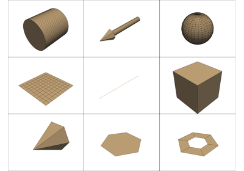
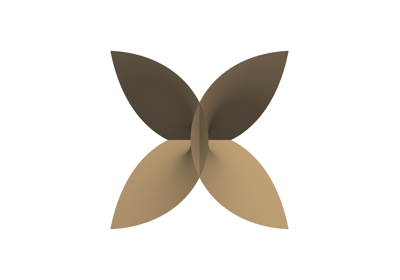
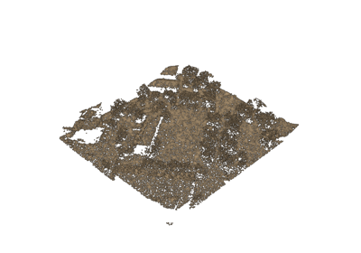
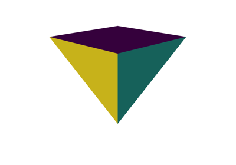
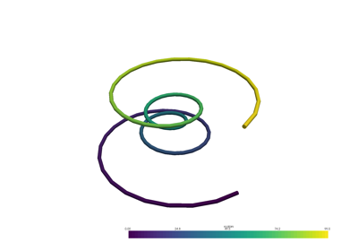
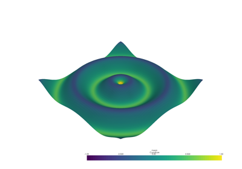
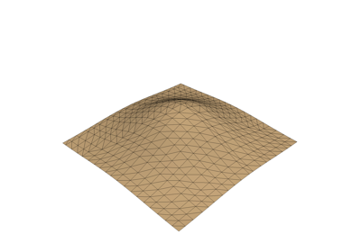
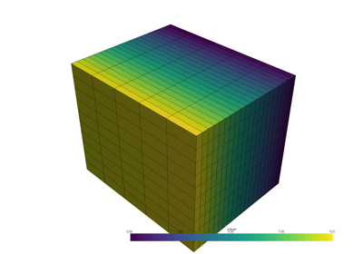
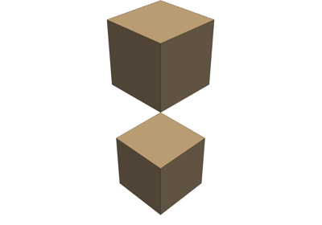
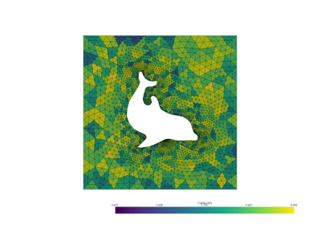
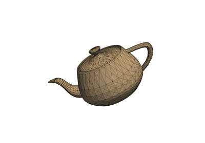
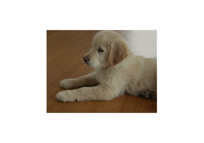
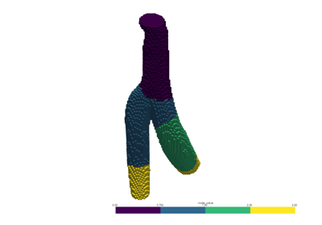
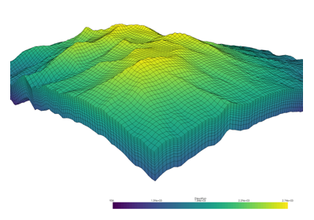